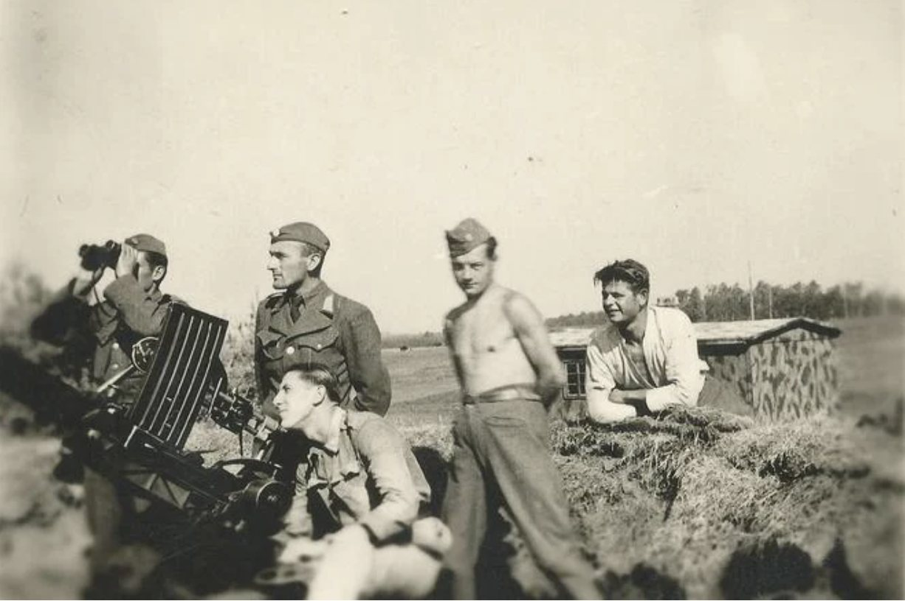

Životopis
Matej Beznák (1921 – 1997): letec SNP, ktorý dokázal nemožné
Slovenský vojenský letec z Trenčianskych Teplíc. Prešiel elitným výcvikom Luftwaffe a 7. septembra 1944 obrátil skúsenosti proti agresorom: zo zastaraného plátenného dvojplošníka zostrelil moderné nemecké lietadlo. Jeho spomienky vychádzajú v knihe Posledný zostrel.

Mladosť a cesta k letectvu
Matej Beznák sa narodil v roku 1921 v Trenčianskych Tepliciach. Patril medzi najtalentovanejších mladých letcov slovenských vzdušných zbraní – ako dvadsiatnik ho vybrali na špeciálne preškolenie a nasadili na východný front, kde v roku 1942 slúžil pri Zaisťovacej divízii v Žitomire.
Krym, Greifswald a let nad Peenemünde
V roku 1943 absolvoval v Saki na Kryme preškolenie na nemecké bombardéry Heinkel He 111. Následne ho spolu s ďalšou posádkou vybrali do elitnej školy Luftwaffe pre najlepšie posádky bombardérov v Greifswalde na severe Nemecka. Je jediným Slovákom, ktorý počas druhej svetovej vojny zažil strmhlavý let nad Peenemünde – tajnou základňou, kde Nemci vyvíjali rakety V-1 a V-2.
SNP a posledný zostrel z dvojplošníka
Po vypuknutí Slovenského národného povstania sa Beznák stal pozorovateľom Kombinovanej letky na letisku Tri Duby (dnes Sliač). Dňa 7. septembra 1944 sa so svojím pilotom na plátennom dvojplošníku Letov Š-328, ktorému letci hovorili „kravička“, stretol s moderným nemeckým prieskumným lietadlom Focke-Wulf Fw 189. V krátkom súboji ho guľometmi pozorovateľa zostrelil. Podľa historikov ide zrejme o posledný zdokumentovaný zostrel lietadla z dvojplošníka počas druhej svetovej vojny na svete. Beznák mal vtedy 23 rokov.
Vyznamenania a odkaz
Matej Beznák bol nositeľom Radu SNP I. triedy, Československého vojnového kríža 1939, dvakrát Československej medaily Za chrabrosť pred nepriateľom, Československej vojenskej medaily Za zásluhy a ďalších vyznamenaní. Jeho spomienky vyšli v roku 1997 v knihe Takmer pravdivý príbeh (s Jakubom Prokešom). Zomrel v roku 1997. V roku 2026 vychádza druhé, zásadne doplnené vydanie pod názvom Posledný zostrel – 328 strán, vyše 250 dobových fotografií a mapy Luftwaffe.
- 1921
- narodil sa v Trenčianskych Tepliciach
- 1942
- Žitomir, Zaisťovacia divízia – obrana letiska
- 1943
- preškolenie na Heinkel He 111 v Saki na Kryme; elitná škola Luftwaffe v Greifswalde; let nad Peenemünde
- 1944
- SNP – pozorovateľ Kombinovanej letky, letisko Tri Duby
- 7. 9. 1944
- zostrel Focke-Wulf Fw 189 z dvojplošníka Letov Š-328
- 1997
- kniha Takmer pravdivý príbeh; úmrtie
- 2026
- druhé vydanie – Posledný zostrel; krst na IMAD Piešťany; Historická revue, RTVS